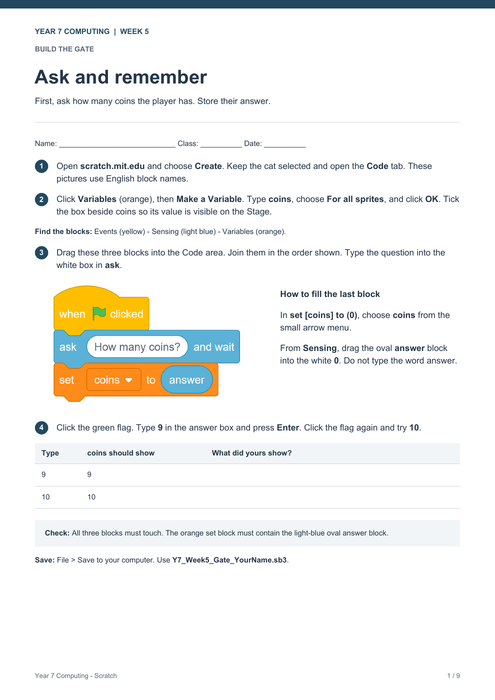

Year 7 Computing · Week 5 · Giannis Liasis
Follow the numbered steps. Match your blocks to the pictures, then test your code.
On a phone, pinch to zoom in on the blocks.

Open the complete PDF worksheet.